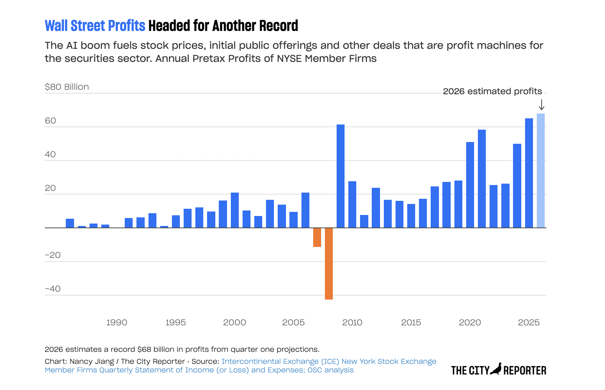
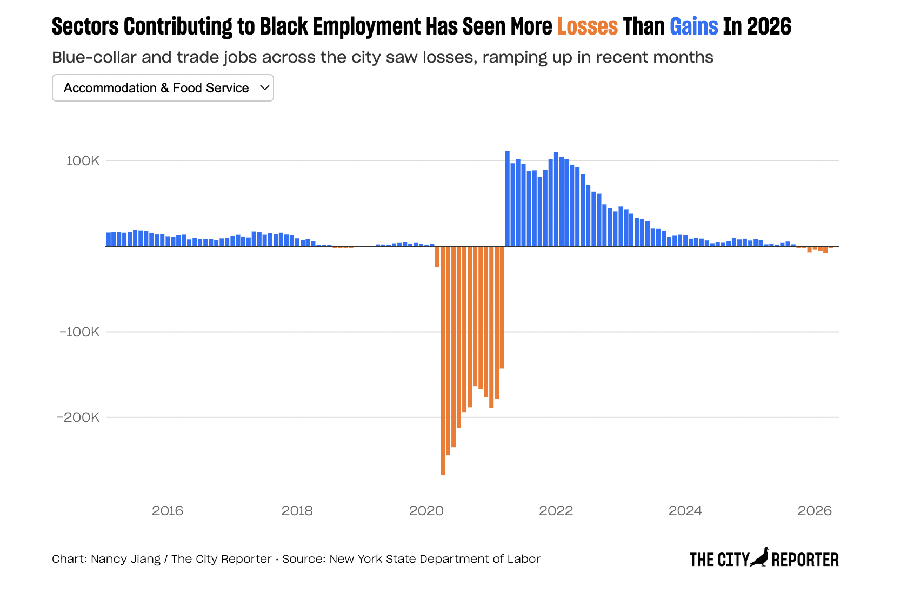
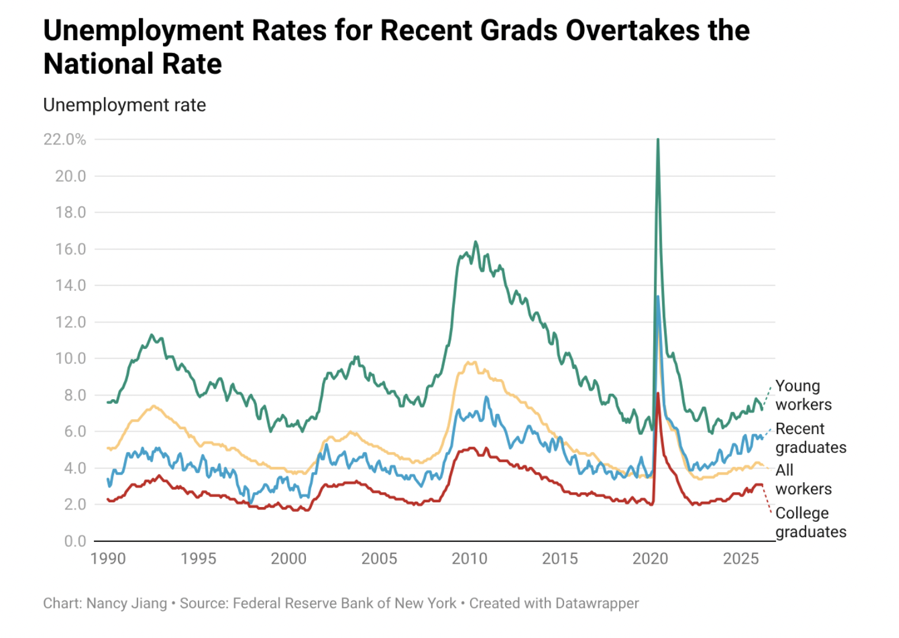
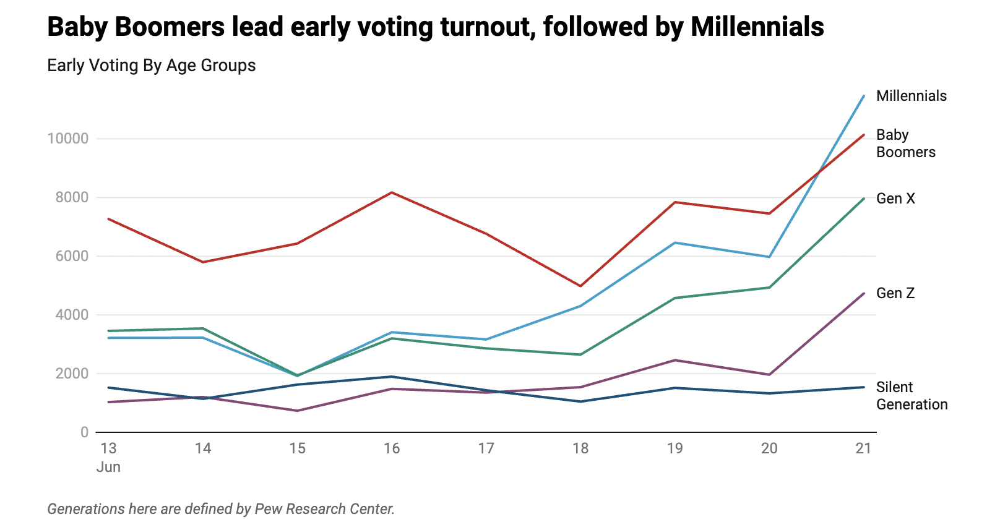
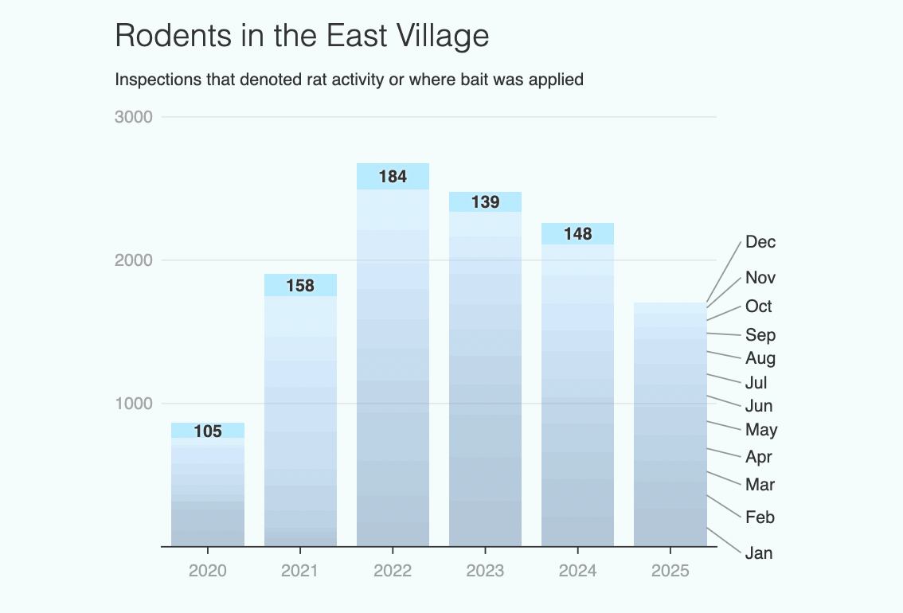
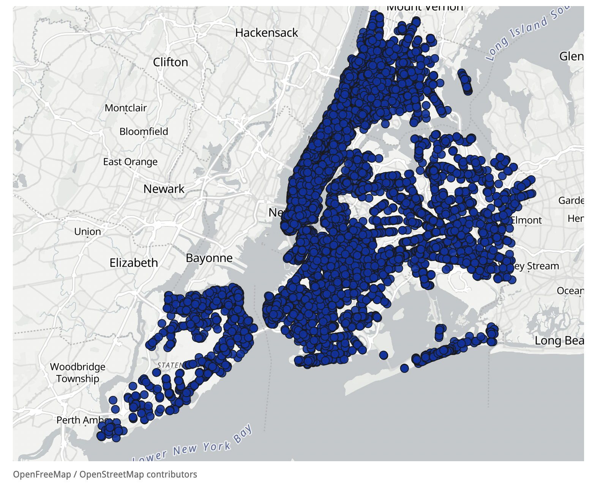
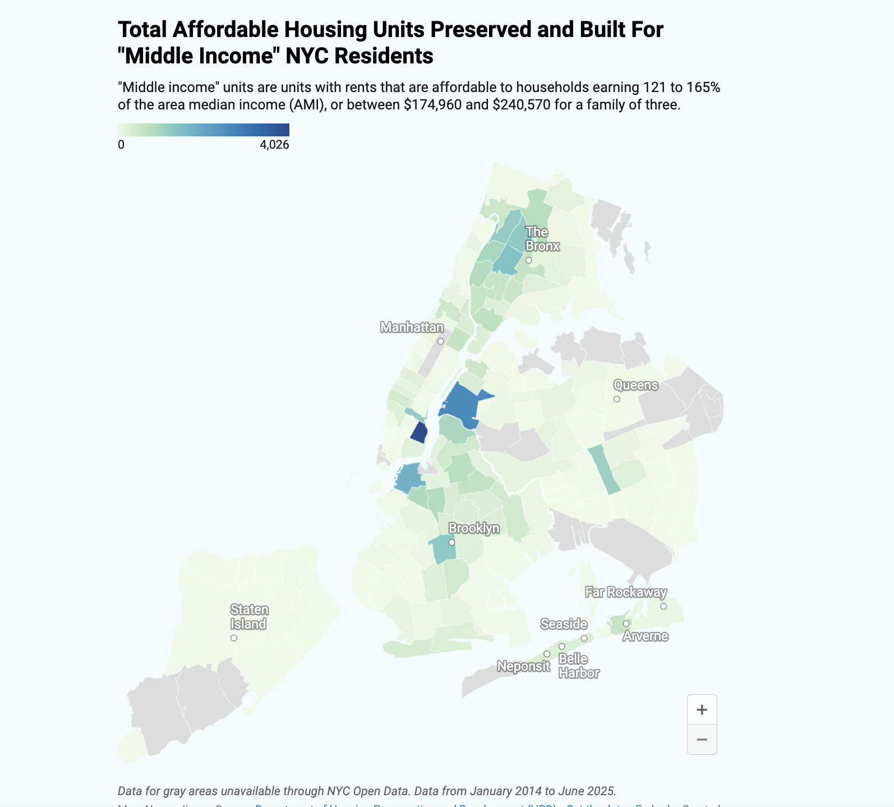
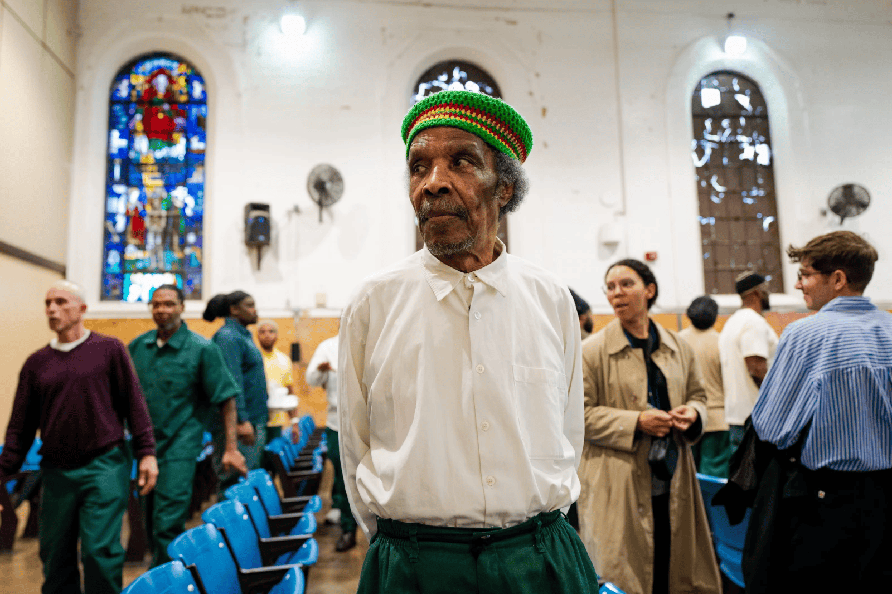
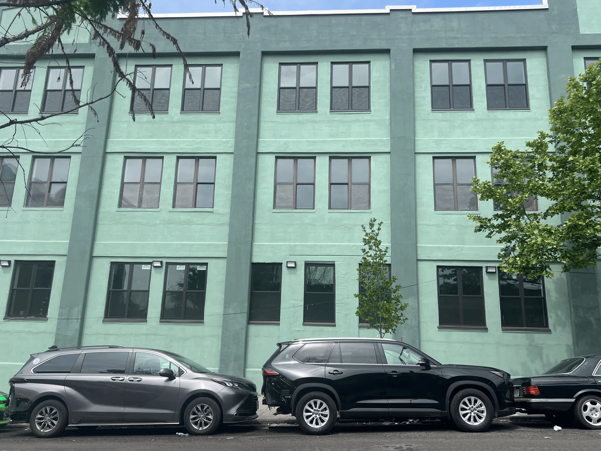
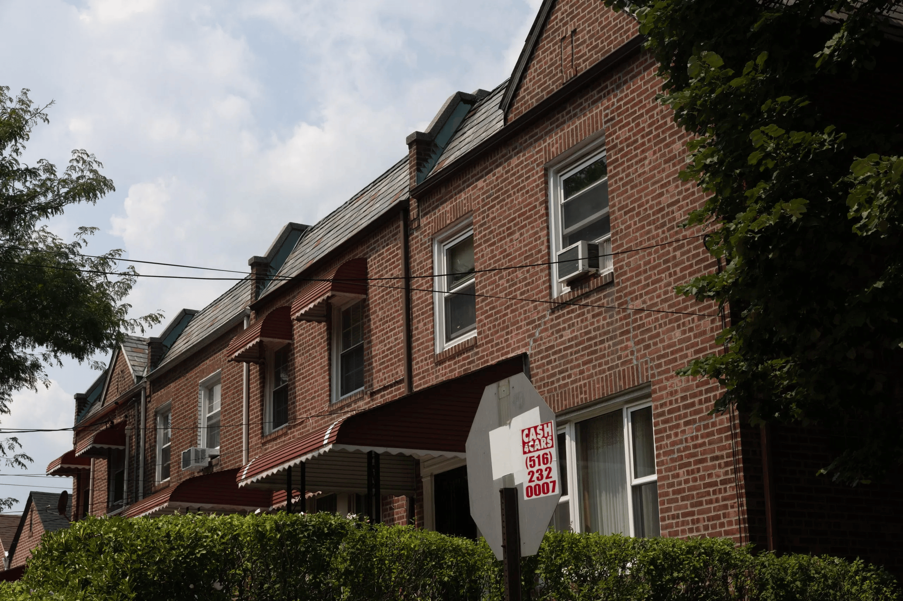

The City Reporter
Reporter and data journalist
I'm a reporter at The Associated Press covering race and ethnicity. My work has appeared in The City Reporter, CalMatters, Billboard Magazine, Forbes, and NYCity News Service. I've reported on housing, social services, education, culture, and economics.
I studied journalism, international relations, political science, and Korean at Boston University and graduated from the Craig Newmark Graduate School of Journalism.
Data Reporting

The City Reporter


Personal project

The City Reporter

Personal project

Personal project

Culture

New York City


The City Reporter
The City Reporter
Business
Times Square Investment Journal
Times Square Investment Journal
Listen
Craig Newmark Graduate School of Journalism
Executive producer for Craig Newmark's live radio class, taught by NPR reporter-trainer George Bodarky.
Audio report
Audio report
Watch
The City Reporter
Vertical Reel